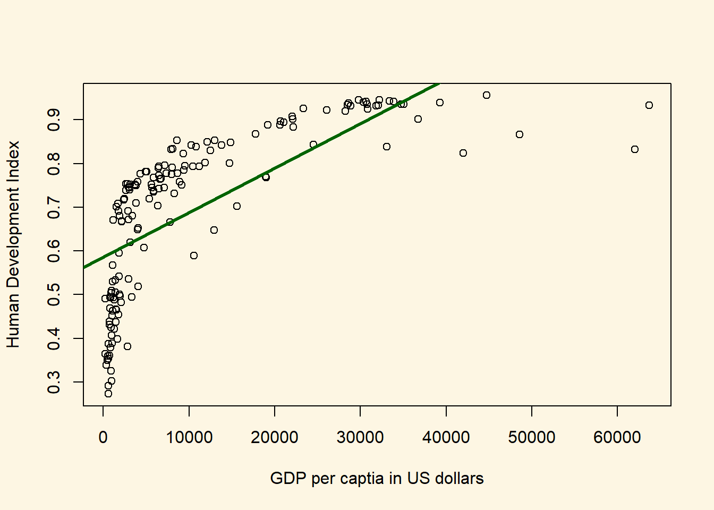
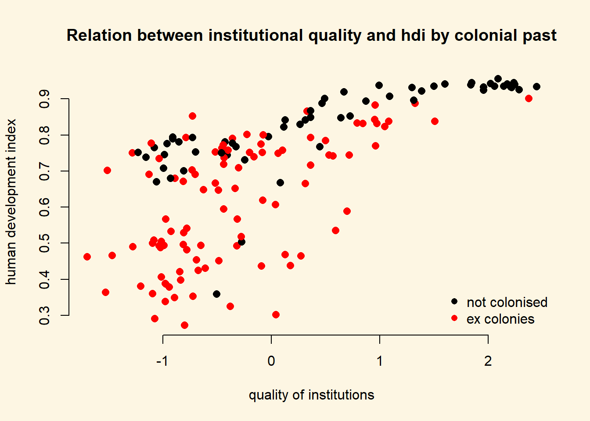
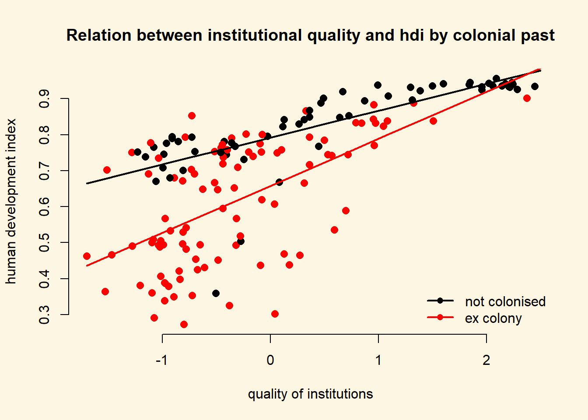
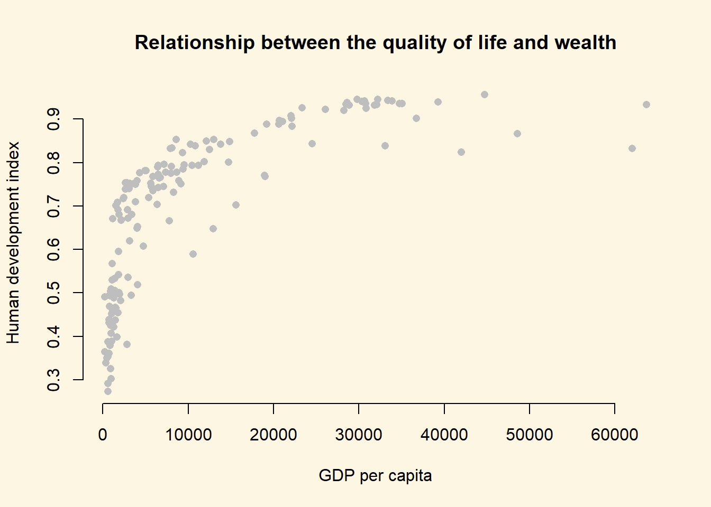
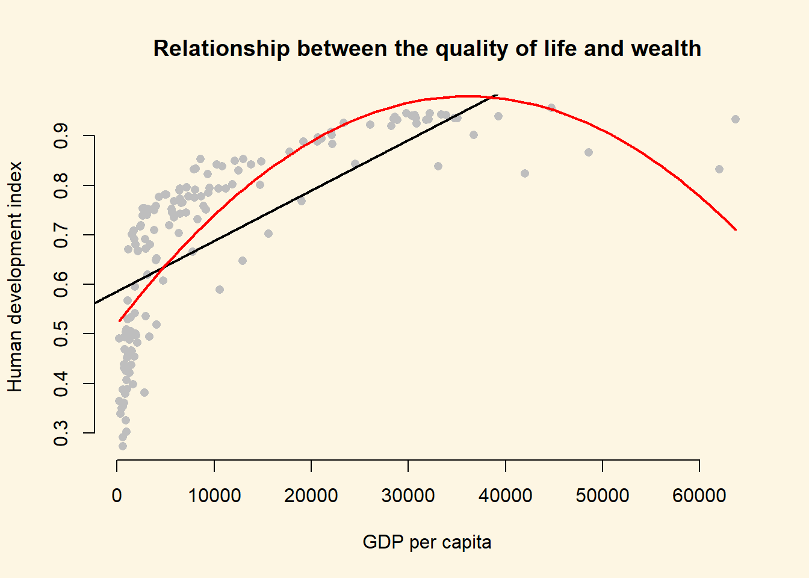
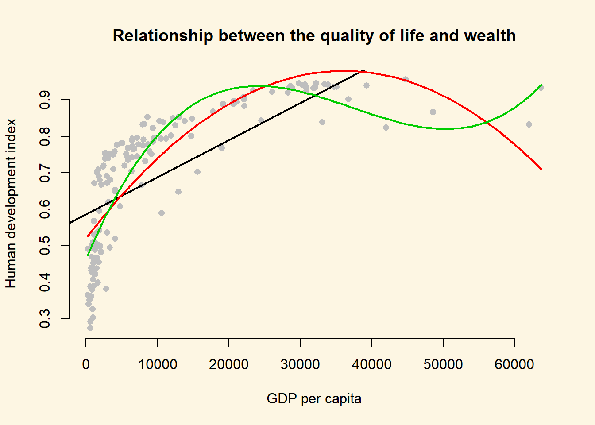
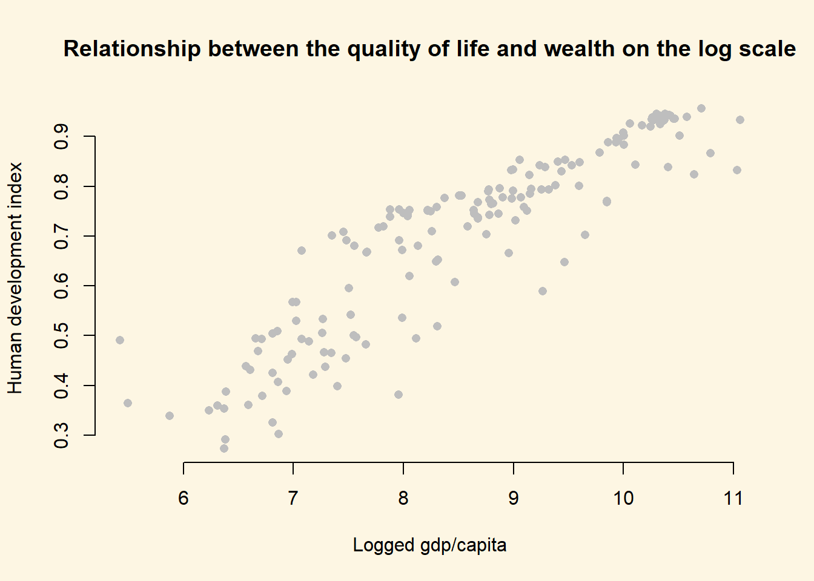
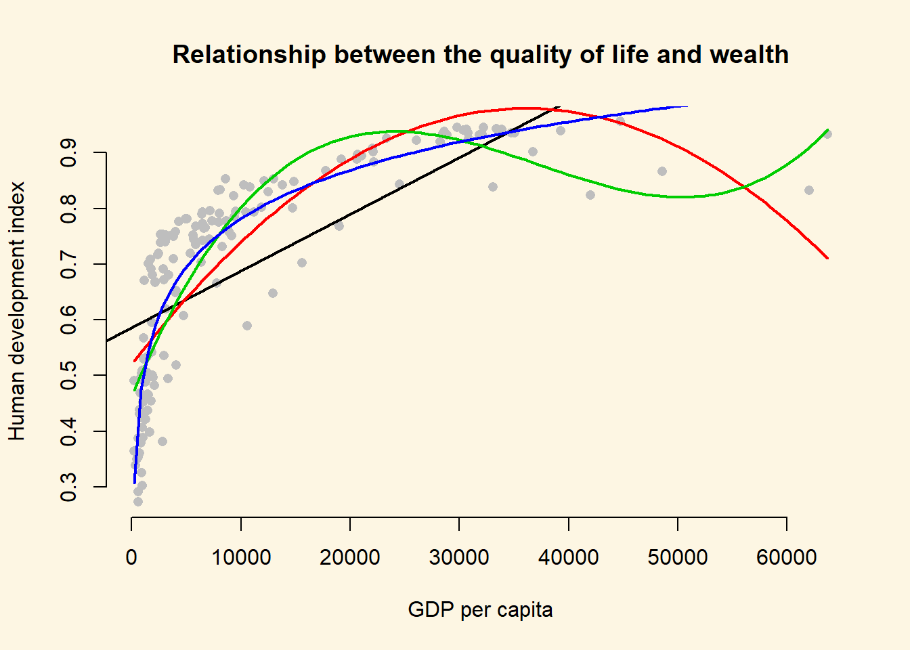
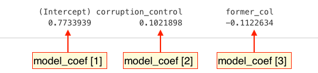
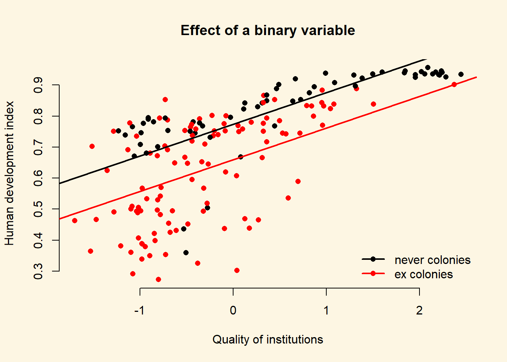

Chapter 8 Multiple linear regression models (II)
8.1 Seminar
In the first part of this seminar, we cover R^2 and adjusted R^2. In the second, we cover interactions. First, an interaction between continuous and binary independent variable and second, between two continuous variables. We also show the F test.
To start with, load the foreign library and the texreg library.
library(foreign) # to load non-native file formats
library(texreg) # to create better looking regression tablesIn case library(texreg) throws an error message, you have to install the package first. A package is like an app on your mobile. It adds additional functionality. You need to install it only once. To install the package run install.packages("texreg"). Then load the library library(texreg).
rm(list = ls())8.1.1 Loading Data
We will use the small version of the Quality of Government data from 2012 again (QoG2012.csv) with four variables:
| Variable | Description |
|---|---|
former_col |
0 = not a former colony 1 = former colony |
undp_hdi |
UNDP Human Development Index. Higher values mean better quality of life |
wbgi_cce |
Control of corruption. Higher values mean better control of corruption |
wdi_gdpc |
GDP per capita in US dollars |
a <- read.csv("QoG2012.csv")
names(a)[1] "h_j" "wdi_gdpc" "undp_hdi" "wbgi_cce" "wbgi_pse"
[6] "former_col" "lp_lat_abst"summary(a) h_j wdi_gdpc undp_hdi wbgi_cce
Min. :0.0000 Min. : 226.2 Min. :0.2730 Min. :-1.69953
1st Qu.:0.0000 1st Qu.: 1768.0 1st Qu.:0.5390 1st Qu.:-0.81965
Median :0.0000 Median : 5326.1 Median :0.7510 Median :-0.30476
Mean :0.3787 Mean :10184.1 Mean :0.6982 Mean :-0.05072
3rd Qu.:1.0000 3rd Qu.:12976.5 3rd Qu.:0.8335 3rd Qu.: 0.50649
Max. :1.0000 Max. :63686.7 Max. :0.9560 Max. : 2.44565
NA's :25 NA's :16 NA's :19 NA's :2
wbgi_pse former_col lp_lat_abst
Min. :-2.46746 Min. :0.0000 Min. :0.0000
1st Qu.:-0.72900 1st Qu.:0.0000 1st Qu.:0.1343
Median : 0.02772 Median :1.0000 Median :0.2444
Mean :-0.03957 Mean :0.6289 Mean :0.2829
3rd Qu.: 0.79847 3rd Qu.:1.0000 3rd Qu.:0.4444
Max. : 1.67561 Max. :1.0000 Max. :0.7222
NA's :7 Let’s create a copy of the dataset and then remove all missing values.
# copy of original dataset
a.full <- aTo remove all missing values at once, we use the apply() function. It is very useful to repeat the same operations on all rows or columns of a dataset. The apply() function takes the following arguments:
| argument | description |
|---|---|
X |
the name of the dataset on which we want to repeat the operation on |
MARGIN |
1 = rows, 2 = columns |
FUN |
operation that we want to repeat |
So for example, apply(X = a, MARGIN = 1, FUN = mean ) would return the mean value for every row. We will define our own operation. First, !is.na() means “is not missing”. The function returns true or false for every cell. We want to keep rows where none of the observations are missings. Therefore, we use the all() function which is true if all cells are not missing.
# drop all missing values
a <- a[apply(a, 1, function(x) all(!is.na(x)) ), ]If you do not fully understand this code, don’t worry. It deletes rows from a dataset whenever a value on any variable is missing.
8.1.2 R Squared
Let’s say, we want to predict the quality of life. Our variable that approximates this is called undp_hdi (the United Nations human development index). The variable is continuous and has a theoretical range from 0 to 1. Larger values correspond to better life quality.
If we did not have any information on a country, our best prediction for every country would be the mean of undp_hdi. We would make some mistakes. But on average, this would be our best prediction. Let’s confirm that this is the case.
# mean of undp_hdi
y_bar <- mean(a$undp_hdi)
round(y_bar, digits = 2)[1] 0.69Our mean is 0.69. If we predict the mean for every country, we will make some mistakes. These mistakes are the differences between the actual values of undp_hdi in every country and the mean of undp_hdi.
# deviations from the mean
deviations.from.ybar <- (a$undp_hdi - y_bar) It’s always going to be true that the sum of the average deviations is 0. This is a property of the mean.
# sum of deviations from ybar is always zero (or extremely close to 0)
sum(deviations.from.ybar)[1] 0.000000000000002553513We will now square the deviations from the mean.
# squared deviations from the mean
sq.deviations.from.ybar <- deviations.from.ybar^2The squared deviations from the mean capture the overall variability of our variable undp_hdi. At this point you should see that what we did so far, is the first step to getting variance. Dividing the sum of the squared deviations by \(n-1\) would give us the variance of undp_hdi. The variance quantifies the variability of a variable.
Let’s do this:
total.variance <- sum(sq.deviations.from.ybar) / (length(a$undp_hdi) - 1)
total.variance[1] 0.03434449The overall variance of undp_hdi is 0.0343445.
Let’s say, we have additional information about a country like for example its wealth. Wealth is measured by the variable wdi_gdpc. We now run a linear model where we predict undp_hdi using the information in wdi_gdpc. If the regression coefficient of wdi_gdpc is significant, that means that both variables are related. This in turn means that we can explain some of the variability in undp_hdi using variability in wdi_gdpc.
# we regress undp_hdi on wdi_gdpc
m1 <- lm( undp_hdi ~ wdi_gdpc, data = a )
screenreg(m1)
=======================
Model 1
-----------------------
(Intercept) 0.59 ***
(0.01)
wdi_gdpc 0.00 ***
(0.00)
-----------------------
R^2 0.50
Adj. R^2 0.50
Num. obs. 158
RMSE 0.13
=======================
*** p < 0.001, ** p < 0.01, * p < 0.05The coefficient of wdi_gdpc is indeed significant. Let’s plot the relationship in a scatterplot and draw the regression line.
# the scatterplot
plot(x = a$wdi_gdpc,
y = a$undp_hdi,
xlab = "GDP per captia in US dollars",
ylab = "Human Development Index")
# the regression line
abline(m1, col = "darkgreen", lwd = 3)
This model looks awful. We over-predict quality of live for poor countries. We under-predict for medium wealth levels and over-predict for rich countries. We will return to this problem later.
For now, you should see that using the variability in wdi_gdpc we actually explain some of the variability in undp_hdi. We do not explain all of the variability. There are still differences between our predictions (the points on the line) and actual outcomes. Were we to explain all of the variability, all of the points would be on the line. They are not. They never will be in real-life applications. The social world is complex. However, we can ask: “How much of the variability in undp_hdi do we explain using the variability in wdi_gdpc.
To answer this question, we first extract a fitted value for every observation in the dataset. Recall that a fitted value is a point on the line. Hence, we take the regression equation \(\hat{Y} = 0.5855759 + 0.000102 \times \textrm{GDP per capita}\) and plug in the value of wdi_gdpc for every row in the dataset.
Actually, R has already done that for us. We can access the fitted values from our model object m1 like so.
fitted.vals <- m1$fitted.valuesNow, we take the same steps as we did earlier. We take the deviations between the actual outcome of undp_hdi and our model predictions (the fitted values). These differences are the mistakes, we make they are called residuals.
# residuals
resids <- (a$undp_hdi - fitted.vals)Actually, R did that for us as well. We could have accessed the residuals as m1$residuals. We again square the deviations between the model predictions and the actual outcomes.
# squared residuals
sq.resids <- resids^2The squared residuals are the variability in undp_hdi which we have NOT explained with the variability in wdi_gdpc.
R^2 is then: 1 - unexplained variability / total variability. R^2, therefore, answers the question “how much of the total variability in undp_hdi do we explain using variability in wdi_gdpc.”
R.sq <- 1 - sum(sq.resids) / sum(sq.deviations.from.ybar)
R.sq[1] 0.4990749We have successfully estimated R^2. There are other ways to get there. For instance, we could compare the variances instead of sums of squared deviations.
Note: The difference between our estimate of R^2 and the one from the regression table is due to rounding error. We get the same value if we use the round() function to round to 2 digits like so:
round(R.sq, digits = 2)[1] 0.58.1.2.1 R Squared - Approach 2
Let’s take the unexplained variance of undp_hdi instead of the unexplained sum of squares.
# unexplained variance
unexplained.variance <- sum(sq.resids) / (length(sq.resids) - 1)R^2 is then 1 - unexplained variance over total variance.
R.sq <- 1- unexplained.variance / total.variance
R.sq[1] 0.49907498.1.2.2 R Squared - Approach 3
Let’s use the explained sum of squares instead of the unexplained sum of squares, i.e., \[R^2 = \frac{ESS}{TSS}\].
# explained sum of squares
ESS <- sum((fitted.vals - y_bar)^2)
# R^2
R.sq <- ESS/ sum(sq.deviations.from.ybar)
R.sq[1] 0.49907498.1.2.3 R Squared - Approach 4
You may have already noticed that R^2 looks very similar to the correlation coefficient. That’s right. In fact, we can quickly estimate R^2 by taking the squared correlation between our fitted values and the actual outcomes.
R.sq <- cor(m1$fitted.values, a$undp_hdi)^2
R.sq[1] 0.49907498.1.2.4 Adjusted R^2
R^2 always weakly increases if we include more X variables into our model. The reason is that the correlation between two variables is never exactly zero. That means in any sample, two variables are always related to some degree. They may not be related in the same way in the population, however. So, the relationship between two variables that we see in our sample may just be noise.
Yet, R^2 increases whenever two variables are correlated. R^2 never decreases. Adjusted R^2 accounts for the number of predictors that we have added two our model by adding a penalty that increases as we increase the number of X variables in our model. The penalty looks like this:
We multiply R^2 by \(\frac{n-1}{n-k-1}\), where \(n\) is the number of observations and \(k\) is the number of X variables. So, assuming our sample size is 158 and we add 1 predictor to our model that so far only included political stability, we would multiply R^2 by
# number of observations
n <- length(sq.resids)
# number of X variables
k <- length(m1$coefficients) - 1
# penalty
penalty <- (n-1) / (n-k-1)
adj.R.sq <- 1 - penalty * (sum(sq.resids) / sum(sq.deviations.from.ybar))
adj.R.sq[1] 0.4958638Since the formula for adjusted R^2 is: \[ 1 - \frac{n-1}{n-k-1} \times \frac{\mathrm{Sum\;of\;unexplained\;variability}}{\mathrm{Sum\;of\;total\;variability}} \]
we can estimate adjusted R^2 by rearranging the formula to:
\[ 1 - (1-R^2) \times \frac{n-1}{n-k-1} \] Let’s compute adjusted R^2 directly from R^2:
adj.R.sq <- 1 - (1 - R.sq) * penalty
adj.R.sq[1] 0.49586388.1.3 The Relationship between Institutional Quality and Quality of Life by Colonial Past
Let’s create a scatterplot between wbgi_cce and undp_hdi and color the points based on the value of former_col.
NOTE: We’re using pch = 16 to plot solid circles. You can see other available styles by typing ?points or help(points) at the console.
Copy the plot command in the seminar, you can go over it at home.
# main plot
plot(
x = a$wbgi_cce,
y = a$undp_hdi,
col = factor(a$former_col),
pch = 16,
cex = 1.2,
bty = "n",
main = "Relation between institutional quality and hdi by colonial past",
xlab = "quality of institutions",
ylab = "human development index"
)
# add a legend
legend(
"bottomright", # position fo legend
legend = c("not colonised", "ex colonies"), # what to seperate by
col = factor(a$former_col), # colors of legend labels
pch = 16, # dot type
bty = "n" # no box around the legend
)
To explain the level of development with quality of institutions is intuitive. We could add the colonial past dummy, to control for potential confounders. Including a dummy gives us the difference between former colonies and not former colonies. It therefore shifts the regression line parallelly. We have looked at binary variables in the last weeks. To see the effect of a dummy again, refer to the extra info at the bottom of page.
8.1.4 Interactions: Continuous and Binary
From the plot above, we can tell that the slope of the line (the effect of institutional quality) is probably different in countries that were colonies and those that were not. We say: the effect of institutional quality is conditional on colonial past.
To specify an interaction term, we use the asterisk (*)
| Example | |
|---|---|
* |
A*B - In addition to the interaction term (A*B), both the constituents (A and B) are automatically included. |
m2 <- lm(undp_hdi ~ wbgi_cce * former_col, data = a)
screenreg( m2 )
===============================
Model 1
-------------------------------
(Intercept) 0.79 ***
(0.02)
wbgi_cce 0.07 ***
(0.01)
former_col -0.13 ***
(0.02)
wbgi_cce:former_col 0.06 **
(0.02)
-------------------------------
R^2 0.59
Adj. R^2 0.58
Num. obs. 158
RMSE 0.12
===============================
*** p < 0.001, ** p < 0.01, * p < 0.05We set our covariate former_col to countries that weren’t colonized and then second, to ex colonies. We vary the quality of institutions from -1.7 to 2.5 which is roughly the minimum to the maximum of the variable.
NOTE: We know the range of values for wbgi_cce from the summary statistics we obtained after loading the dataset at the beginning of the seminar. You can also use the range() function.
# minimum and maximum of the quality of institutions
range(a$wbgi_cce)[1] -1.699529 2.445654We now illustrate what the interaction effect does. To anticipate, the effect of the quality of institutions is now conditional on colonial past. That means, the two regression lines will have different slopes.
We make use of the predict() function to draw both regression lines into our plot. First, we need to vary the institutional quality variable from its minimum to its maximum. We use the seq() (sequence) function to create 10 different institutional quality values. Second, we create two separate covariate datasets. In the first, x1, we set the former_col variable to never colonies. In the second, x2, we set the same variable to ex colonies. We then predict the fitted values y_hat1, not colonised countries, and y_hat2, ex colonies.
# sequence of 10 institutional quality values
institutions_seq <- seq(from = -1.7, to = 2.5, length.out = 10)
# covariates for not colonies
x1 <- data.frame(former_col = 0, wbgi_cce = institutions_seq)
# look at our covariates
head(x1) former_col wbgi_cce
1 0 -1.7000000
2 0 -1.2333333
3 0 -0.7666667
4 0 -0.3000000
5 0 0.1666667
6 0 0.6333333# covariates for colonies
x2 <- data.frame(former_col = 1, wbgi_cce = institutions_seq)
# look at our covariates
head(x2) former_col wbgi_cce
1 1 -1.7000000
2 1 -1.2333333
3 1 -0.7666667
4 1 -0.3000000
5 1 0.1666667
6 1 0.6333333# predict fitted values for countries that weren't colonised
yhat1 <- predict(m2, newdata = x1)
# predict fitted values for countries that were colonised
yhat2 <- predict(m2, newdata = x2)We now have the predicted outcomes for varying institutional quality. Once for the countries that were former colonies and once for the countries that were not.
We will re-draw our earlier plot. In addition, right below the plot() function, we use the lines() function to add the two regression lines. The function needs to arguments x and y which represent the coordinates on the respective axes. On the x axis we vary our independent variable quality of institutions. On the y axis, we vary the predicted outcomes.
We add two more arguments to our lines() function. The line width is controlled with lwd and we set the colour is controlled with col which we set to the first and second colours in the colour palette respectively.
# main plot
plot(
y = a$undp_hdi,
x = a$wbgi_cce,
frame.plot = FALSE,
col = factor(a$former_col),
pch = 16,
cex = 1.2,
bty = "n",
main = "Relation between institutional quality and hdi by colonial past",
xlab = "quality of institutions",
ylab = "human development index"
)
# add the regression line for the countries that weren't colonised
lines(x = institutions_seq, y = yhat1, lwd = 2, col = 1)
# add the regression line for the ex colony countries
lines(x = institutions_seq, y = yhat2, lwd = 2, col = 2)
# add a legend
legend(
"bottomright", # position fo legend
legend = c("not colonised", "ex colony"), # what to seperate by
col = factor(a$former_col), # colors of legend labels
pch = 16, # dot type
lwd = 2, # line width in legend
bty = "n" # no box around the legend
)
As you can see, the line is steeper for ex colonies than for countries that were never colonised. That means the effect of institutional quality on human development is conditional on colonial past. Institutional quality matters more in ex colonies.
Let’s examine the effect sizes of institutional quality conditional on colonial past.
\[\begin{align} \hat{y} & = & \beta_{0} + \beta_{1} \times \mathrm{wbgi_cce} + \beta_{2} \times \mathrm{former\_col} + \beta_{3} \times \mathrm{wbgi_cce} \times \mathrm{former\_col} \\ \hat{y} & = & 0.79 + 0.08 \times \mathrm{wbgi_cce} + -0.12 \times \mathrm{former\_col} + 0.05 \times \mathrm{wbgi_cce} \times \mathrm{former\_col} \end{align}\]There are now two scenarios. First, we look at never coloines or second, we look at ex colonies. Let’s look at never colonies first.
If a country was never a colony, all terms that are multiplied with former_col drop out.
Therefore, the effect of the quality of institutions (measured by wbgi_cce) in never colonies is just the coefficient of wbgi_cce \(\beta_1 = 0.08\).
In the second scenario, we are looking at ex colonies. In this case none of the terms drop out. From our original equation:
\[\begin{align} \hat{y} & = & 0.79 + 0.08 \times \mathrm{wbgi_cce} + -0.12 \times \mathrm{former\_col} + 0.05 \times \mathrm{wbgi_cce} \times \mathrm{former\_col} \\ \hat{y} & = & 0.79 + 0.08 \times \mathrm{wbgi_cce} + -0.12 \times 1 + 0.05 \times \mathrm{wbgi_cce} \times 1 \\ \hat{y} & = & 0.79 -0.12 + 0.08 \times \mathrm{wbgi_cce} + 0.05 \times \mathrm{wbgi_cce} \\ \hat{y} & = & 0.67 + 0.08 \times \mathrm{wbgi_cce} + 0.05 \times \mathrm{wbgi_cce} \end{align}\]The effect of the quality of institutions is then: \(\beta_1 + \beta_3 = 0.08 + 0.05 = 0.13\).
The numbers also tell us that the effect of the quality of institutions is bigger in ex colonies. For never colonies the effect is \(0.08\) for every unit-increase in institutional quality. For ex colonies, the corresponding effect is \(0.13\).
The table below summarises the interaction of a continuous variable with a binary variable in the context of our regression model.
| Ex Colony | Intercept | Slope |
|---|---|---|
| 0 = never colony | \(\beta_0\) \(= 0.79\) |
\(\beta_1\) \(= 0.08\) |
| 1 = ex colony | \(\beta_0 + \beta_2\) = \(0.79 + -0.12 = 0.67\) |
\(\beta_1 + \beta_3\) \(= 0.08 + 0.05 = 0.13\) |
8.1.5 Non-Linearities
We can use interactions to model non-linearities. Let’s suppose we want to illustrate the relationship between GDP per capita and the human development index.
We draw a scatter plot to investigate the relationship between the quality of life (hdi) and wealth (gdp/captia).
plot(
y = a$undp_hdi,
x = a$wdi_gdpc,
pch = 16,
frame.plot = FALSE,
col = "grey",
main = "Relationship between the quality of life and wealth",
ylab = "Human development index",
xlab = "GDP per capita"
)
It’s easy to see, that the relationship between GDP per captia and the Human Development Index is not linear. Increases in wealth rapidly increase the quality of life in poor societies. The richer the country, the less pronounced the effect of additional wealth. We would mis-specify our model if we do not take the non-linear relationship into account.
Let’s go ahead and mis-specify our model :-)
# a mis-specified model
bad.model <- lm(undp_hdi ~ wdi_gdpc, data = a)
screenreg( bad.model )
=======================
Model 1
-----------------------
(Intercept) 0.59 ***
(0.01)
wdi_gdpc 0.00 ***
(0.00)
-----------------------
R^2 0.50
Adj. R^2 0.50
Num. obs. 158
RMSE 0.13
=======================
*** p < 0.001, ** p < 0.01, * p < 0.05We detect a significant linear relationship. The effect may look small because the coefficient rounded to two digits is zero. But remember, this is the effect of increasing GDP/capita by \(1\) US dollar on the quality of life. That effect is naturally small but it is probably not small when we increase wealth by \(1000\) US dollars.
However, our model would also entail that for every increase in GDP/capita, the quality of life increases on average by the same amount. We saw from our plot that this is not the case. The effect of GDP/capita on the quality of life is conditional on the level of GDP/capita. If that sounds like an interaction to you, then that is great because, we will model the non-linearity by raising the GDP/capita to a higher power. That is in effect an interaction of the variable with itself. GDP/capita raised to the second power, e.g. is GDP/capita * GDP/capita.
8.1.5.1 Polynomials
We know from school that polynomials like \(x^2\), \(x^3\) and so on are not linear. In fact, \(x^2\) can make one bend, \(x^3\) can make two bends and so on.
Our plot looks like the relationship is quadratic. So, we use the poly() function in our linear model to raise GDP/capita to the second power like so: poly(wdi_gdpc, 2).
better.model <- lm(undp_hdi ~ poly(wdi_gdpc, 2), data = a)
screenreg( list(bad.model, better.model),
custom.model.names = c("bad model", "better model"))
============================================
bad model better model
--------------------------------------------
(Intercept) 0.59 *** 0.69 ***
(0.01) (0.01)
wdi_gdpc 0.00 ***
(0.00)
poly(wdi_gdpc, 2)1 1.64 ***
(0.11)
poly(wdi_gdpc, 2)2 -0.98 ***
(0.11)
--------------------------------------------
R^2 0.50 0.68
Adj. R^2 0.50 0.67
Num. obs. 158 158
RMSE 0.13 0.11
============================================
*** p < 0.001, ** p < 0.01, * p < 0.05It is important to note, that in the better model the effect of GDP/capita is no longer easy to interpret. We cannot say for every increase in GDP/capita by one dollar, the quality of life increases on average by this much. No, the effect of GDP/capita depends on how rich a country was to begin with.
It looks like our model that includes the quadratic term has a much better fit. The adjusted R^2 increases by a lot. Furthermore, the quadratic term, poly(gdp_capita, 2)2 is significant. That indicates that newly added variable improves model fit. We can run an F-test with anova() function which will return the same result. The F-test would be useful when we add more than one new variable, e.g. we could have raised GDP_captia to the power of 5 which would have added four new variables.
# f test
anova(bad.model, better.model)Analysis of Variance Table
Model 1: undp_hdi ~ wdi_gdpc
Model 2: undp_hdi ~ poly(wdi_gdpc, 2)
Res.Df RSS Df Sum of Sq F Pr(>F)
1 156 2.7010
2 155 1.7384 1 0.96263 85.831 < 0.00000000000000022 ***
---
Signif. codes: 0 '***' 0.001 '**' 0.01 '*' 0.05 '.' 0.1 ' ' 1We can interpret the effect of wealth (GDP/capita) on the quality of life (human development index) by predicting the fitted values of the human development index given a certain level of GDP/capita. We will vary GDP/captia from its minimum in the data to its maximum and the plot the results which is a good way to illustrate a non-linear relationship.
Step 1: We find the minimum and maximum values of GDP/capita.
# find minimum and maximum of per capita gdp
range(a$wdi_gdpc)[1] 226.235 63686.676Step 2: We predict fitted values for varying levels of GDP/captia (let’s create 100 predictions).
# our sequence of 100 GDP/capita values
gdp_seq <- seq(from = 226, to = 63686, length.out = 100)
# we set our covarite values (here we only have one covariate: GDP/captia)
x <- data.frame(wdi_gdpc = gdp_seq)
# we predict the outcome (human development index) for each of the 100 GDP levels
y_hat <- predict(better.model, newdata = x)Step 3: Now that we have created our predictions. We plot again and then we add the bad.model using abline and we add our non-linear version better.model using the lines() function.
plot(
y = a$undp_hdi,
x = a$wdi_gdpc,
pch = 16,
frame.plot = FALSE,
col = "grey",
main = "Relationship between the quality of life and wealth",
ylab = "Human development index",
xlab = "GDP per capita"
)
# the bad model
abline(bad.model, col = 1, lwd = 2)
# better model
lines(x = gdp_seq, y = y_hat, col = 2, lwd = 2)
At home, we want you to estimate even.better.model with GDP/capita raised to the power of three to determine whether the data fit improves. Show this visually and with an F test.
# estimate even better model with gdp/capita^3
even.better.model <- lm(undp_hdi ~ poly(wdi_gdpc, 3), data = a)
# f test
anova(better.model, even.better.model)Analysis of Variance Table
Model 1: undp_hdi ~ poly(wdi_gdpc, 2)
Model 2: undp_hdi ~ poly(wdi_gdpc, 3)
Res.Df RSS Df Sum of Sq F Pr(>F)
1 155 1.7384
2 154 1.3346 1 0.4038 46.595 0.0000000001888 ***
---
Signif. codes: 0 '***' 0.001 '**' 0.01 '*' 0.05 '.' 0.1 ' ' 1# so, our even better.model is statistically significantly even better
# we predict the outcome (human development index) for each of the 100 GDP levels
y_hat2 <- predict(even.better.model, newdata = x)
plot(
y = a$undp_hdi,
x = a$wdi_gdpc,
pch = 16,
frame.plot = FALSE,
col = "grey",
main = "Relationship between the quality of life and wealth",
ylab = "Human development index",
xlab = "GDP per capita"
)
# the bad model
abline(bad.model, col = 1, lwd = 2)
# better model
lines(x = gdp_seq, y = y_hat, col = 2, lwd = 2)
# even better model
lines(x = gdp_seq, y = y_hat2, col = 3, lwd = 2)
We generate an even better fit with the cubic, however it still looks somewhat strange. The cubic is being wagged around by its tail. The few extreme values cause the strange shape. This is a common problem with polynomials. We move on to an alternative.
8.1.5.2 Log-transformations
Many non-linear relationships actually do look linear on the log scale. We can illustrate this by taking the natural logarithm of GDP/captia and plot the relationship between quality of life and our transformed GDP variable.
Note: Some of you will remember from your school calculators that you have an ln button and a log button where ln takes the natural logarithm and log takes the logarithm with base 10. The natural logarithm represents relations that occur frequently in the world and R takes the natural logarithm with the log() function by default.
Below, we plot the same plot from before but we wrap gdp_capita in the log() function which log-transforms the variable.
plot(
y = a$undp_hdi,
x = log(a$wdi_gdpc),
pch = 16,
frame.plot = FALSE,
col = "grey",
main = "Relationship between the quality of life and wealth on the log scale",
ylab = "Human development index",
xlab = "Logged gdp/capita"
)
As you can see, the relationship now looks linear and we get the best fit to the data if we run our model with log-transformed gdp.
# run model with log-transformed gdp
best.model <- lm(undp_hdi ~ log(wdi_gdpc), data = a)
# let's check our model
screenreg( list(bad.model, better.model, even.better.model, best.model),
custom.model.names = c("Bad Model", "Better Model", "Even Better Model", "Best Model"))
===========================================================================
Bad Model Better Model Even Better Model Best Model
---------------------------------------------------------------------------
(Intercept) 0.59 *** 0.69 *** 0.69 *** -0.37 ***
(0.01) (0.01) (0.01) (0.04)
wdi_gdpc 0.00 ***
(0.00)
poly(wdi_gdpc, 2)1 1.64 ***
(0.11)
poly(wdi_gdpc, 2)2 -0.98 ***
(0.11)
poly(wdi_gdpc, 3)1 1.64 ***
(0.09)
poly(wdi_gdpc, 3)2 -0.98 ***
(0.09)
poly(wdi_gdpc, 3)3 0.64 ***
(0.09)
log(wdi_gdpc) 0.13 ***
(0.00)
---------------------------------------------------------------------------
R^2 0.50 0.68 0.75 0.82
Adj. R^2 0.50 0.67 0.75 0.82
Num. obs. 158 158 158 158
RMSE 0.13 0.11 0.09 0.08
===========================================================================
*** p < 0.001, ** p < 0.01, * p < 0.05Polynomials can be useful for modelling non-linearities. However, for each power we add an additional parameter that needs to be estimated. This reduces the degrees of freedom. If we can get a linear relationship on the log scale, one advantage is that we lose only one degree of freedom. Furthermore, we gain interpretability. The relationship is linear on the log scale of gdp/capita. This means we can interpret the effect of gdp/captia as: For an increase of gdp/captia by one percent, the quality of life increases by \(\frac{0.12}{100}\) points on average. The effect is very large because human_development only varies from \(0\) to \(1\).
To assess model fit, the f test is not very helpful here because, the initial model and the log-transformed model estimate the same number of parameters (the difference in the degrees of freedom is 0). Therefore, we rely on adjusted R^2 for interpretation of model fit. It penalises for additional parameters. According to our adjusted R^2, the log-transformed model provides the best model fit.
To illustrate that this is the case, we return to our plot and show the model fit graphically.
# fitted values for the log model (best model)
y_hat3 <- predict(best.model, newdata = x)
# plot showing the fits
plot(
y = a$undp_hdi,
x = a$wdi_gdpc,
pch = 16,
frame.plot = FALSE,
col = "grey",
main = "Relationship between the quality of life and wealth",
ylab = "Human development index",
xlab = "GDP per capita"
)
# the bad model
abline(bad.model, col = 1, lwd = 2)
# better model
lines(x = gdp_seq, y = y_hat, col = 2, lwd = 2)
# even better model
lines(x = gdp_seq, y = y_hat2, col = 3, lwd = 2)
# best model
lines(x = gdp_seq, y = y_hat3, col = 4, lwd = 2)
The dark purple line shows the log-transformed model. It clearly fits the data best.
8.1.6 Exercises
- Using
better model, where we included the square of GDP/capita, what is the effect of:- an increase of GDP/capita from 5000 to 15000?
- an increase of GDP/capita from 25000 to 35000?
- You can see that the curve in our quadratic plot curves down when countries become very rich. Speculate whether that results make sense and what the reason for this might be.
- Raise GDP/captia to the highest power using the
poly()that significantly improves model fit.- Does your new model solve the potentially artefical down-curve for rich countries?
- Does the new model improve upon the old model?
- Plot the new model.
- Estimate a model where
wbgi_pse(political stability) is the response variable andh_jandformer_colare the explanatory variables. Include an interaction between your explanatory variables. What is the marginal effect of:- An independent judiciary when the country is a former colony?
- An independent judiciary when the country was not colonized?
- Does the interaction between
h_jandformer_colimprove model fit?
- Run a model on the human development index (
hdi), interacting an independent judiciary (h_j) andinstitutions_quality. What is the effect of quality of institutions:- In countries without an independent judiciary?
- When there is an independent judiciary?
- Illustrate your results.
- Does the interaction improve model fit?
- Clear your workspace and download the California Test Score Data used by Stock and Watson.
- Download ‘caschool.dta’ Dataset
- Draw a scatterplot between
avgincandtestscrvariables. - Run two regressions with
testscras the dependent variable. c.a. In the first model useavgincas the independent variable. c.b. In the second model use quadraticavgincas the independent variable. - Test whether the quadratic model fits the data better.
8.1.7 Extra Info: Dummy Variables Repetition
The variable ex_colony is binary. It takes on two values: “never colonies” or “ex colonies”. The first value, “never colonies” is the baseline. When the variable takes on the value “ex colonies”, we end up with an intercept shift. Consequently, we get a second parallel regression line.
model1 <- lm(human_development ~ institutions_quality + ex_colony, data = world_data)
screenreg(model1)
================================
Model 1
--------------------------------
(Intercept) 0.77 ***
(0.02)
institutions_quality 0.10 ***
(0.01)
ex_colonyex colonies -0.11 ***
(0.02)
--------------------------------
R^2 0.54
Adj. R^2 0.54
Num. obs. 172
RMSE 0.12
================================
*** p < 0.001, ** p < 0.01, * p < 0.058.1.7.1 The Effect of a Dummy Variable
| Ex Colony | Intercept | Slope |
|---|---|---|
| 0 = not a former colony | Intercept + (ex_colonyex colonies * 0)= 0.77 + (-0.11 * 0) = 0.77 |
institutions_quality= 0.10 |
| 1 = former colony | Intercept + (ex_colonyex colonies * 1)= 0.77 + (-0.11 * 1) = 0.66 |
institutions_quality= 0.10 |
To illustrate the effect of a dummy we can access the coefficients of our lm model directly with the coefficients() function:
model_coef <- coefficients(model1)
model_coef (Intercept) institutions_quality ex_colonyex colonies
0.7734319 0.1021146 -0.1140925 We can use the square brackets [ ] to access individual coefficients.

To illustrate the effect of a dummy we draw a scatterplot and then use abline() to draw two regression lines, one with ex_colonyex colonies == "never colony" and another with ex_colony == "former colony".
Instead of passing the model as the first argument to abline(), we can just pass the intercept and slope as two separate arguments.
plot(
human_development ~ institutions_quality,
data = world_data,
frame.plot = FALSE,
col = ex_colony,
pch = 16,
xlab = "Quality of institutions",
ylab = "Human development index",
main = "Effect of a binary variable"
)
# the regression line when ex_colony = never colony
abline(model_coef[1], model_coef[2], col = 1, lwd = 2)
# the regression line when ex_colony = ex colony
abline(model_coef[1] + model_coef[3], model_coef[2], col = 2, lwd = 2)
# add a legend to the plot
legend(
"bottomright",
legend = levels(world_data$ex_colony),
col = world_data$ex_colony,
lwd = 2, # line width = 1 for adding a line to the legend
pch = 16,
bty = "n"
)